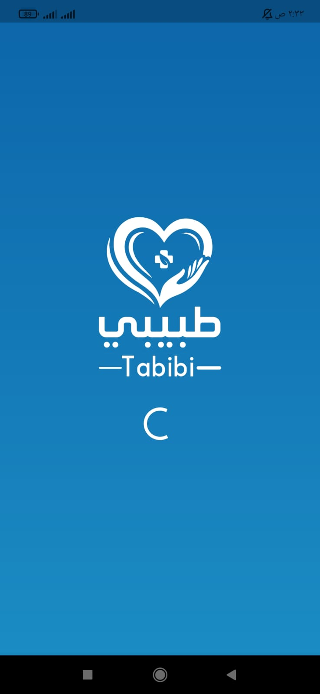
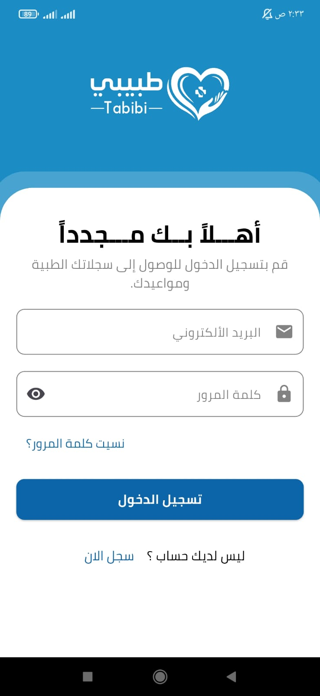
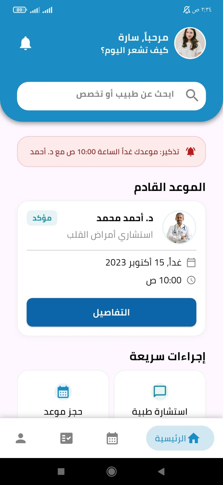
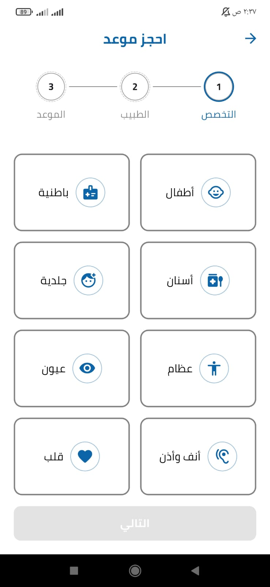
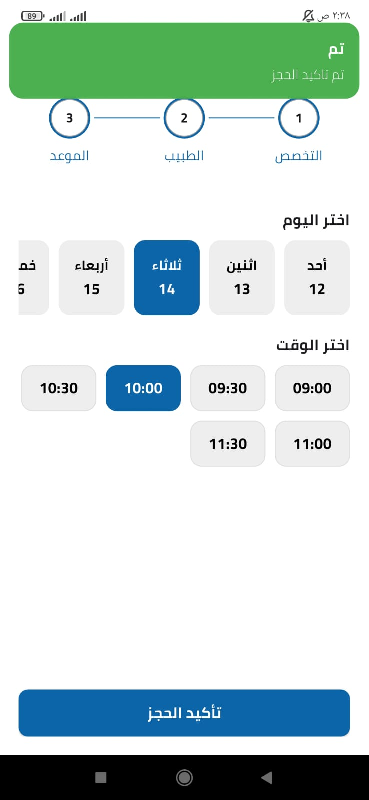
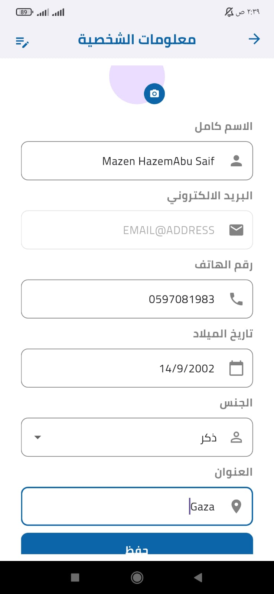

Tabibi
منصة رقمية متكاملة تساعد أطباء العيادات الخاصة على إدارة مواعيدهم ومتابعة السجلات المرضية في مكان واحد.
عندما يغيب التاريخ الطبي تبدأ المخاطر
كان محمد، مريض القلب، يزور طبيب أسنان جديداً دون أن يملك الطبيب سجله المرضي الكامل. لم يكن الطبيب يعرف الأدوية التي يتناولها محمد، أو أمراضه المزمنة، أو أنواع الحساسية لديه، مما جعل اتخاذ القرار الطبي أكثر صعوبة وعرضه لمخاطر كان يمكن تفاديها. من هنا جاءت فكرة «طبيبي»: سجل مرضي رقمي محفوظ يرافق المريض، ويوثق تاريخه الطبي ووصفاته وكل زيارة لدى أي طبيب.
ينتقل المريض بين التخصصات دون ملف موحد يوضح تاريخه المرضي.
غياب قائمة الأدوية والأمراض المزمنة والحساسيات قد يعرّض المريض لقرار طبي غير آمن.
ضياع الأوراق يشتت الطبيب ويجبر المريض أحياناً على إعادة فحوصات مكلفة.
حل واحد يحفظ قصة المريض كاملة
صمّمنا «طبيبي» ليمنح المريض سجلاً صحياً منظماً، ويساعد الطبيب على إدارة عيادته ومواعيده ومرضاه ومالياته بكفاءة.
سجل طبي موحّد
ملف رقمي واحد يحفظ التاريخ المرضي للمريض، ويمكن الرجوع إليه عند زيارة أي طبيب.
جدولة مواعيد الطبيب
إدارة ساعات العمل والمواعيد والحجوزات بوضوح، مع تقليل التعارض والانتظار.
سجل مرضي لكل مريض
الوصول إلى تاريخ الزيارات والأدوية والحساسيات والتشخيصات قبل الكشف لاتخاذ قرار أدق.
إدارة مالية متكاملة
متابعة المعاملات والتقارير المالية والإيرادات والمصاريف وصافي ربح العيادة.
مشاركة آمنة مع الطبيب
يصل الطبيب إلى المعلومات الضرورية بإذن المريض، في أي وقت ومن أي مكان.
مواعيد أكثر تنظيماً
حجز واضح وتنبيهات تلقائية تساعد المريض والطبيب على متابعة المواعيد بسهولة.
التقنيات المستخدمة وسير العمل
كيف يعمل طبيبي؟
منظومة متكاملة تربط المريض والطبيب والسكرتير والأدمن، وتحوّل إدارة الرعاية والعمليات المالية إلى تجربة واضحة ومنظمة.
واجهة المريض
- تعديل الملف الشخصي والبيانات الأساسية
- حجز المواعيد مع الأطباء ومتابعة حالة الحجز
- تحديث السجل المرضي ومتابعة تاريخ كل زيارة
- محادثة مع الطبيب بعد الزيارة
- متابعة الوصفات الطبية والمعاملات المالية
لوحة تحكم الطبيب (السكرتير)
- إدارة ساعات العمل والجدول المتاح للحجز
- إدارة طرق الدفع والفواتير
- إدارة السكرتير وصلاحيات الوصول
- إدارة المرضى وتوثيق الكشف والسجلات
- محادثات مباشرة مع المرضى بعد الزيارة
- نظام محاسبي يوضح صافي الربح والمصاريف والسجلات المالية
لوحة تحكم المنصة (الأدمن)
- متابعة إجمالي الأطباء والمرضى وأرباح المنصة
- إدارة المستخدمين: الأطباء والسكرتير والمرضى
- إدارة طلبات انضمام الأطباء ومراجعتها
- متابعة المحادثات مع الأطباء
- التقارير المالية واشتراكات الأطباء
- الرد على رسائل «تواصل معنا» الواردة من المستخدمين
رحلة متصلة لكل مستخدم
تعمل «طبيبي» كنظام واحد يربط المريض بالطبيب والسكرتير والأدمن في كل خطوة.
منصة الويب (React & .NET)
واجهة ويب حديثة ومتكاملة تعرض تجربة المستخدم والوظائف الأساسية للمنصة بوضوح


تطبيق طبيبي
تطبيق الموبايل يقدم تجربة حجز واستشارات ووصفات سهلة وسريعة بين المريض والطبيب.






مع طبيبي الرعاية أكثر أماناً
نحوّل المعلومات الطبية المبعثرة إلى سجل موحّد يساعد المريض والطبيب على اتخاذ قرارات أفضل.
مع طبيبي
- سجل مرضي مركزي يحفظ تاريخ المريض كاملاً
- ظهور الحساسية والأدوية المزمنة للطبيب
- حجز إلكتروني فوري من المنزل
- محادثة مباشرة مع الطبيب بعد الكشف
- وصفات وفحوصات محفوظة رقمياً
- تقييمات موثقة وتذكيرات تلقائية بالمواعيد
بدون طبيبي
- لا يوجد سجل مركزي؛ المعلومات في الذاكرة أو على ورقة
- الطبيب يعمل بمعلومات ناقصة وقد يصف دواءً متعارضاً
- حجز هاتفي أو حضوري وانتظار طويل
- لا يوجد تواصل مباشر بعد الكشف
- الوصفات والتحاليل الورقية معرضة للضياع
- نسيان المواعيد وصعوبة معرفة مستوى الطبيب
نصل للطبيب ونعرّفه بقيمة طبيبي
نعتمد على التسويق الرقمي والتواصل المباشر لبناء الثقة، ثم نمنح الطبيب فرصة حقيقية لتجربة المنصة قبل الاشتراك.
التسويق عبر LinkedIn وInstagram
نعرّف الأطباء بالمنصة ومزاياها من خلال محتوى واضح وحالات استخدام واقعية.
تواصل مباشر وزيارة تعريفية
نتواصل مع الطبيب الجديد لفهم احتياجه، ثم نزوره في عيادته ونشرح له طريقة العمل ونساعده على إعداد حسابه واستخدام أهم الخصائص.
7 أيام مجانية ثم 10$ شهرياً
يجرّب الطبيب المنصة مجاناً لمدة 7 أيام، ثم ينتقل إلى اشتراك شهري بقيمة 10 دولارات عند اقتناعه بالقيمة.
من MVP إلى نسخة قابلة للنشر التجاري
إضافة الصيدليات والمراكز الطبية والمختبراتتوسيع المنصة وربطها بجهات صحية مساندة لتقديم خدمة متكاملة للمريض.
الملف المخبري المتكاملرفع وعرض نتائج التحاليل وربطها مباشرة بملف المريض وتاريخه الطبي.
الكشف والتوثيق بالذكاء الاصطناعييبدأ الطبيب الكشف من الموبايل ويتحدث صوتياً، فتحوّل المنصة الكلام إلى نص طبي منظّم وتوزّعه تلقائياً على الأعراض السريرية والفحص والتشخيص والوصفات الدوائية.
نظام رسائل SMSإرسال رسائل نصية تلقائية لتذكير المرضى بالمواعيد والوصفات والمتابعات المهمة.
المساعد الطبي الذكي والصيدلية الأقربيرفع المريض روشتته للمساعد الذكي، فيقترح الصيدلية المفتوحة والقريبة والمتوفر فيها الدواء، مع إمكانية الحجز مباشرة.
Tabibi Project Team

Front-end Developer


أسئلة الجمهور
نرحّب بأسئلتكم وملاحظاتكم — دعونا نناقش كيف يمكن لـ"طبيبي" أن يخدم عيادتكم.